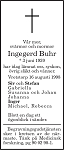

Rut Ingegerd Amalia Dahlberg
Handelsbiträde i Norsjö mcp år 1941. Blev 78 år.
| Född: | 1920-06-03 Norsjö 13, Kläppen, Norsjö fs, Norsjö sn. [1] |
|---|
| Död: | 1998-08-16 Kristallg 6, Vretstorp, Viby fs, Hallsbergs kn. [2] |
|---|
| Vigsel: | 1941-11-16 Norsjö, Norsjö fs, Norsjö sn. [3] | Lars Olof Buhr, banbiträde i Kusfors, Bastuträsk kbfd och Rut Ingegerd Amalia Dahlberg, handelsbiträde i Norsjö mcp.
Vigselförrättare: J. A. Lindahl.
Avis om vigsel till Bastuträsk 1941-11-17.
|
|---|
| Levde: | 1942-09 Kusfors, Bastuträsk kbfd, Norsjö sn. [4] | |
|---|
| Levde: | 1955 Orrkulla 1:1, Viby fs, Örebro län. [5] | |
|---|
| Levde: | 1958 Viby 3:1 /V/, Banv.stugan 275, Vretstorp, Viby fs, Örebro län. [5] | 1958: Viby, Örebro län, Viby 3:1 /V/
Viby, Örebro län
Fastighet
Viby 3:1 /V/
Adress
Viby 3:1 /V/, Banv.stugan 275, Vretstorp, Viby fs, Örebro län
|
|---|
| Levde: | 1971 Kristallg 8, Vretstorp, Viby fs, Hallsbergs kn, Örebro län. [6] | |
|---|
| Levde: | 1981 Vretstorp Tjädern 4, Kristallg 8, Vretstorp, Viby fs, Hallsbergs kn, Örebro län. [7] | |
|---|
| Levde: | 1991 Grotorp 4:4, Kristallg 6, Vretstorp, Viby fs, Hallsbergs kn. [8] | |
|---|
Personhistoria
| Årtal | Ålder | Händelse |
|---|
| 1920 |
|
Födelse 1920-06-03 Norsjö 13, Kläppen, Norsjö fs, Norsjö sn [1] |
| 1941 |
21 år |
Vigsel Lars Olof (Olle) Buhr 1941-11-16 Norsjö, Norsjö fs, Norsjö sn [3] |
| 1942 |
|
Levde Lars Olof (Olle) Buhr 1942-09 Kusfors, Bastuträsk kbfd, Norsjö sn [4] |
| 1942 |
22 år |
Dottern Siv Ingegerd Buhr Strömquist föds 1942-09-18 Kusfors, Bastuträsk kbfd, Norsjö sn [4] |
| 1946 |
26 år |
Dottern Inger Margareta Buhr föds 1946-07-17 Petiknäs 2:29, Bastuträsk kbfd, Norsjö sn [9] |
| 1951 |
30 år |
Modern Elina Amanda Bergmark dör 1951-03-02 Norsjö 13, Kläppen, Norsjö fs, Norsjö sn [10] |
| 1955 |
|
Levde Lars Olof (Olle) Buhr 1955 Orrkulla 1:1, Viby fs, Örebro län [5] |
| 1958 |
|
Levde Lars Olof (Olle) Buhr 1958 Viby 3:1 /V/, Banv.stugan 275, Vretstorp, Viby fs, Örebro län [5] |
| 1961 |
40 år |
Fadern Jakob Ferdinand Hiller Dahlberg dör 1961-04-09 Norsjö 10:34, Norsjö fs , Norsjö kn [11] |
| 1971 |
|
Levde Lars Olof (Olle) Buhr 1971 Kristallg 8, Vretstorp, Viby fs, Hallsbergs kn, Örebro län [6] |
| 1981 |
|
Levde Lars Olof (Olle) Buhr 1981 Vretstorp Tjädern 4, Kristallg 8, Vretstorp, Viby fs, Hallsbergs kn, Örebro län [7] |
| 1991 |
|
Levde Lars Olof (Olle) Buhr 1991 Grotorp 4:4, Kristallg 6, Vretstorp, Viby fs, Hallsbergs kn [8] |
| 1993 |
73 år |
Maken Lars Olof (Olle) Buhr dör 1993-08-01 Kristallg 6, Vretstorp, Viby fs, Hallsbergs kn [12] |
| 1998 |
78 år |
Död 1998-08-16 Kristallg 6, Vretstorp, Viby fs, Hallsbergs kn [2] |
Källor
| [1] | Norsjö (AC) AIIa:5 (1912-1928) Bild 1570 / sid 145 |
| |
| | |
| [2] | RTB 98 / SPAR 92f |
| |
| | |
| [3] | SCB Vigda AC Norsjö 38/1941 |
| |
| | |
| [4] | SCB Födda AC Bastuträsk kbfd 37/1942 |
| |
| | |
| [5] | Mtl Sveriges befolkning 1960 |
| |
| | |
| [6] | Mtl Örebro län 1971 |
| |
| | |
| [7] | Mtl Örebro län 1981 |
| |
| | |
| [8] | Mantalslängd 1991, Örebro län |
| |
| | |
| [9] | Mtl Sveriges befolkning 1950 |
| |
| | |
| [10] | DB, PA, FS / DOR 50-51 |
| |
| | |
| [11] | DB, FS / DOR 61 / UTD 61-67 |
| |
| | |
| [12] | RTB 93 / SPAR 92f / SPAR 95 |
| |
|
|  |
| 1998-08-21. Dödsannons i Norran |
|
{kind=link}